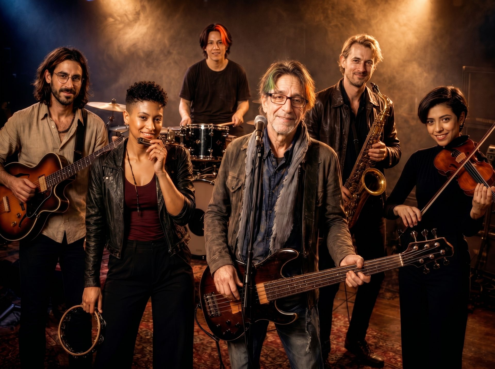

The Research Band

El Núcleo Creativo

Instrumentos: Voz solista, bajo y guitarra.
El motor creativo y el arquitecto del sonido distintivo de la banda. Más que un grupo, TRB es su "ideología artística y musical". Compone y produce toda la discografía original, fusionando géneros y explorando nuevas fronteras sonoras. Es socio fundador del mítico grupo español CADILLAC, productor musical en las principales televisiones del país y voz en innumerables bandas sonoras y jingles publicitarios a nivel europeo.
Alineación Oficial

Formado en el prestigioso Conservatorio Paganini de Génova. Luca aporta una sensibilidad mediterránea y una técnica virtuosa que define el nuevo sonido de TRB. Su estilo es un viaje constante entre la introspección emotiva y la improvisación de vanguardia.

El soplo del Estrecho. Formado en Sevilla y curtido en los legendarios clubes de jazz de Granada, Erik fusiona el alma del jazz americano con sutiles matices flamencos. Su saxo actúa como una voz narrativa que respira pura libertad.

Vanguardia y ritual. Con una estricta formación clásica en Madrid y París, Alba trasciende las fronteras orquestales para explorar texturas sonoras contemporáneas. Su violín añade una dimensión cinematográfica y emocionalmente intensa a cada composición de la banda.

Con 24 años y formado en el Senzoku Gakuen y UCLA, fue descubierto por Eduardo en el Nice Jazz Festival 2023. Destaca por su asombroso virtuosismo técnico y polirritmias extremas. Fusiona el pulso del taiko ancestral con dinámicas modernas, creando el "latido" perfecto para el grupo.

Calor, pulso y frontera. Afincada en Sanlúcar de Barrameda (Cádiz), Nara Blue aporta a The Research Band una mezcla singular de soul clásico, blues áspero y percusión orgánica. Su papel representa la vertiente más terrenal del proyecto: es textura, compás y alma viva.
Colaboradores Externos y Miembros Honoríficos
- Javier de Juan — Batería
- José de Lucas — Guitarra y voz
- Ricardo Castro — Teclados y voz
- Lotfy B. Amor — Cantante y compositor
- José Juan Almela — Teclados y compositor